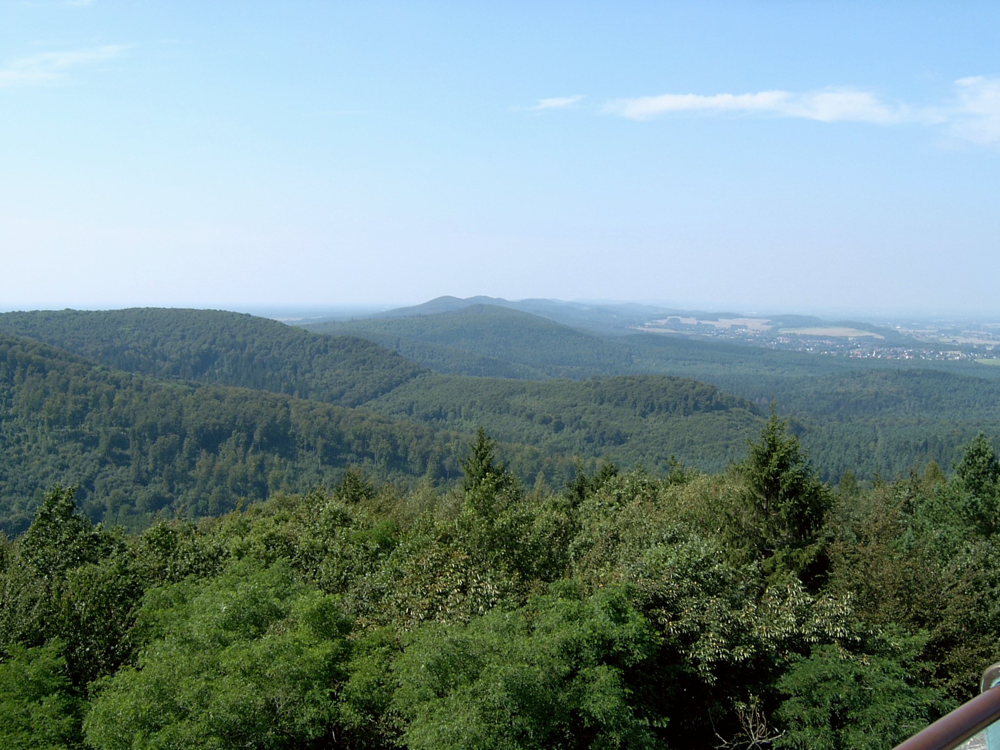
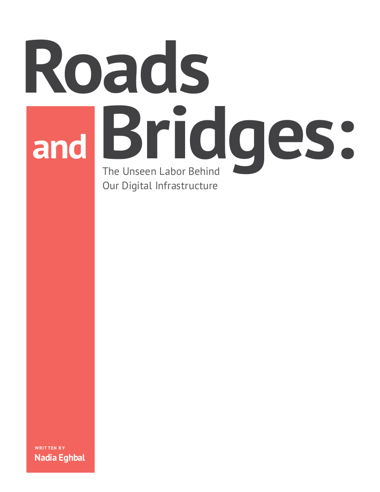
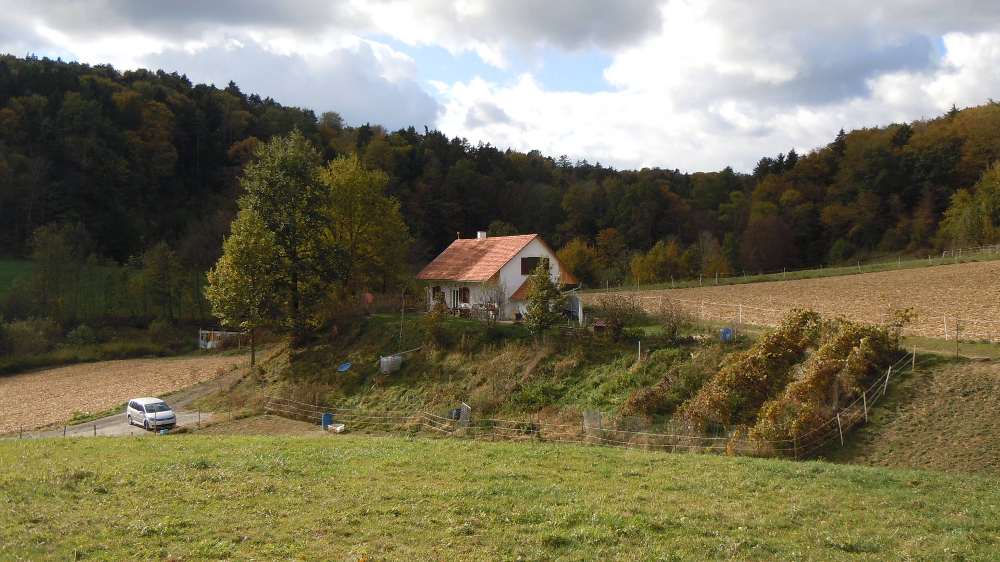
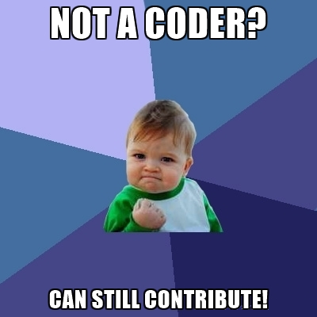

No Time To Wait 3
25. October 2018
Peter Bubestinger-Steindl
p.bubestinger@AV-RD.com
“Just using 'open stuff' won't fix your problems.
It might even make things worse.”
...which btw applies to any digital system/tool, if not incorporated or used properly. Independent of its license.
Popular "mistakes"
- Underestimating environmental- and starting conditions.
- Do you value "digital freedoms" or just looking for cheap?
-
No continuous allocation of resources
(time or money). - No community involvement: "I'm not a coder".
(Your) reasons to use FOSS?
“I need a free alternative for X, because we ain't got enough budget to get the real X.”
“Your stuff's for free, right?
Good, because we need the money to pay proprietary vendor-lock-in system X.”
“We want to study/share/improve our digital workflows. Do you know a FOSS system we could use or build on?”
Define Free/Real?
| Free X: | Real X: |
|---|---|
| Gratis? | The "Wow! you can afford that? I'm jealous." option? |
| Cheap - as in "unprofessional" or less valuable/reliable/awesome? | The professional tool? |
| Worth less than non-free (water...)? | The number one that everyone uses? |
| Freedom to Use, Study, Share & Improve (USSI)? | The one with the great GUI? |
| Part of a digital commons infrastructure? | The well-supported one? |
What if...
Real = Free?
- Any reason not to want that?
- How much would that be worth to you?
- Do you expect free to be as good as non-free (water)?
Unpossible?!
“Environmental- and starting conditions matter.”

“Shared, public code makes up the digital infrastructure of our society today.”
Infrastructure?
Taxes?
- Good: Most publicly funded projects now require FOSS license :)
- But: Public institutions sometimes not "allowed" to pay for FOSS :(
-
Demand/help change of rules:
Public Money? Public Code! (publiccode.eu)
Abandoned orphans
“No developer likes to admit to have to give up, abandon his code work. It's quite emotional. Seriously.”
How to make sure projects we like, or rely on, stay alive and flourish?
Top reasons for FOSS developers to leave a project:
- lack of interest
- lack of patience
- lack of resources (time/money)
- change of profession
- creative differences
Source: The Most Common Causes of Failed Open-Source Software Projects
Taken for granted?
-
Who of you is using:
Mediainfo, VLC, Wikipedia, Firefox, FFmpeg, QCTools, Linux, etc...? - What if they disappear?
- What's your (institution's) plan to keep these applications alive and kicking?
How much do you value 'IT'?
Your preference?
- Industrial, patented, lock-in seeds, exploit nature for profit (= Proprietary)
- organic, sustainable, community, handmade (= FOSS)
- Which one's required for sustainable long-term?
- Which one's the current mainstream?
- Which profits whom?
- Which one has the shinier apples?
You *are* 'The Community'
Contributions
- Value FOSS like fresh air or clean water.
- Offer your time or money.
- Write documentation.
- Publish tutorials.
- Design graphics.
- Testing.
- Raising funds.
- Demand FOSS and open file formats.
- ...
Summary
- Environmental- and starting conditions matter.
- Encourage and value "digital freedoms".
- Contribute, if possible :)
- Allocate continuous resources (time or money)
- Think long-term & in collaborations.
- The End -
Questions? Comments?
License and Credits
The text of this presentation is available under a Free License:
Creative Commons
'Attribution-ShareAlike'
(CC-BY-SA)

Peter Bubestinger-Steindl
p.bubestinger@AV-RD.com
About myself
Peter Bubestinger-Steindl
p.bubestinger@AV-RD.com
- Studied media computer-science at the TU Vienna
- Developer, trainer and tech-consultant since 2000
- 8 years working with broadcast audio archives around the globe (NOA)
- 5 years R&D at the "Austrian Mediathek"
- Dec. 2015: Founding of company "AV-RD"